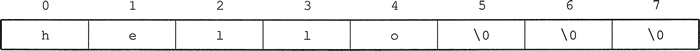
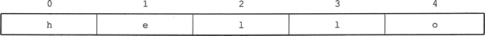
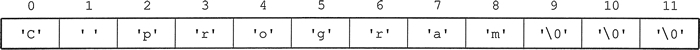
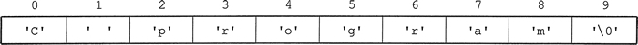
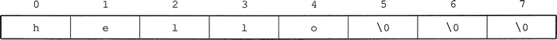
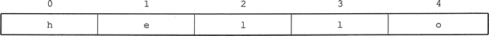
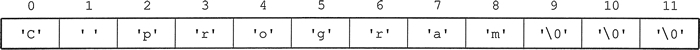
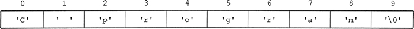

首页 > 编程笔记
一维字符数组的定义、初始化及引用，C语言一维字符数组详解
字符数组通常用于存储和处理字符串，在 C 语言中，一般以空字符 '\0' (ASCII 值为 0)作为字符串结束的标志。
一维字符数组一般用于存储和表示一个字符串，二维字符数组一般用于存储和表示多个字符串，其每一行均可表示一个字符串。
可以采用单个字符逐个赋值的方式初始化，也可以使用字符串初始化的方式。

当字符数组中含有字符串结束字符 '\0' 时，可以使用 printf 函数及格式控制符 %s，输出该字符数组中的字符串，如下所示。
通常一维数组初始化时，其第一维大小可以省略，例如：
由于该数组中不存在 '\0' 字符，故不能使用 printf("%s",c); 输出。
2) 当字符个数等于数组空间大小时，例如：

这种情况一般采用循环语句逐个输出该数组中的每个字符。
3) 当字符个数多于空间大小时，编译时报错。例如：
其数组存储形式均如下所示。

采用字符串对字符数组进行初始化时，一般省略一维数组空间的大小，即:

为节省空间及书写方便，当用字符串对字符数组初始化时，一般均省略其一维的大小。
例如
可以使用 c[i] 引用该数组中的每个元素，例如：
如字符串”abcd”，C 语言中字符串最后一个有效字符后隐含 '\0' 字符，故该字符串长度为 4。
【例 1】编写实现求一个字符串长度的程序。
分析:把字符串保存在一维字符数组中，其长度用 len 表示，初始为 0。算法为：从该数组的首元素（0 号位置）开始，只要当前元素不为 '\0'，len 加 1，直到遇到 '\0' 为止，此时 len 的值即为该字符串的长度。
实现代码：
The length is: 29
【补充】该程序循环部分也可以使用 while 循环，如下所示：
一维字符数组一般用于存储和表示一个字符串，二维字符数组一般用于存储和表示多个字符串，其每一行均可表示一个字符串。
一维字符教组的定义及初始化
一维字符数组的定义格式为：char 数组名[数组大小];
例如：char c[10];该语句定义了一个一维字符数组 c，大小为 10，即占 10 个字符变量空间，最大可存储长度为 9 的字符串（第 10 个字符为 '0'）。由于没有显式给每个字符变量赋值，故每个字符变量为随机值。
可以采用单个字符逐个赋值的方式初始化，也可以使用字符串初始化的方式。
采用逐个字符赋值的方式
1) 当字符个数少于数组空间大小时，例如：
char c[8] = {'h','e','l','l','o',};//始值个数5小于数组空间个数8
该语句定义了含 8 个字符变量的一维字符数组，前 5 个字符变量分别显式初始化为 'h'，'e'，'l'，'l'，'o' 等 5 个字符，后 3 个字符变量为空字符 '\0'。其存储形式如下。

当字符数组中含有字符串结束字符 '\0' 时，可以使用 printf 函数及格式控制符 %s，输出该字符数组中的字符串，如下所示。
printf ("%s”，c); //数组名 c 为首字符 'h' 的地址或者为 &c[0]
注意：使用 printf 函数及格式控制符 %s，输出一个字符串时，输出列表中一定为某个字符的地址，且从该字符开始的串一定有结束标志 '\0'。该语句的功能是：从输出列表中的该地址开始，到第一次遇到 '\0' 为止，这之间的字符全部输出。通常一维数组初始化时，其第一维大小可以省略，例如：
char c[]={'h','e','l','l','o'};
对应的数组存储形式如下所示。
由于该数组中不存在 '\0' 字符，故不能使用 printf("%s",c); 输出。
char c[8] = {'h','e','l','l','o'};
不等价于
char c[]={'h','e','l','l','o'};
2) 当字符个数等于数组空间大小时，例如：
char c[5]={'h','e','l','l','o'};//初值个数5等于数组大小5
执行该初始化语句后，数组的存储形式如下所示。

char c[5]={'h','e','l','l','o'};
等价于
char c[]={'h','e','l','l','o'};
由于该字符数组中不包含字符串结束标志 '\0'，故不能使用 printf("%s"，c); 输出其中的字符串。输出结果中一般含有随机乱码。这种情况一般采用循环语句逐个输出该数组中的每个字符。
int i;
for(i=0;i<5;i++) //循环次数为字符个数或数组大小
printf ("%c",c[i]);//格式控制符为％c，输出列表中为字符变量c[i]
3) 当字符个数多于空间大小时，编译时报错。例如：
char c[4] = {'h','e','l','l','o'}； //错误。初值个数5大于数组大小4
采用字符串初始化的方式
在 C 语言中，字符串一般是指含有字符串结束符 '\0' 的若干个字符的集合。而使用双引号括起来的字符串常量，默认隐含字符串结束符 '\0'。例如：
char c[12] = {"C program"}; //注意该数组大小应足够大
用字符串对字符数组初始化时，一般大括号可以去掉，即:char c[12]="C program";该初始化语句与以下三条语句均是等价的。
char c[12]= {'C',' ','p','r','o','g','r','a','m','\0','\0','\0'};
或者:
char c[12] = {'C',' ','p','r','o','g','r','a','m','\0'};
或者:
char c[12] = {'C',' ','p','r','o','g','r','a','m'};
以上等价初始化语句有一个共同特点：数组的大小均为指定值 12。其数组存储形式均如下所示。

采用字符串对字符数组进行初始化时，一般省略一维数组空间的大小，即:
char c[]="C program";该数组中除了存储字符串中的 9 个有效字符外，还自动在字符串的结尾存储 '\0' 字符。即该数组的大小为 10。其存储形式如下所示。

为节省空间及书写方便，当用字符串对字符数组初始化时，一般均省略其一维的大小。
一维字符数组的引用
字符数组中的每一个元素都是一个字符，可以使用下标的形式来访问数组中的每一个字符。例如
char c[]="abcd";定义了一个一维字符数组 c，用字符串常量对其初始化，该数组大小为 5，前 4 个元素的值分别为 'a'、'b'、'c'、'd'，第 5 个元素的值为 '\0'。其存储形式如下所示。
c[2]='f'; //把'f'赋给元素c[2]
scanf("%c",&c[3]); //输入一个字符，保存到元素c[3]对应的地址空间中
printf("%c",c[1]); //输出元素c[1]中的字符值
如果每次输出一个字符，可使用循环语句输出字符数组中保存的字符串，参考代码如下。
int i;
for(i=0;c[i]!='\0';i++) //当前i号位置的字符变量只要不是结束符就输出
printf("%c",c[i]);
一维字符教组的应用举例
C 语言中的字符串总是以 '\0' 作为结束标志，所以字符串的长度指的是从字符串的首字符开始，到第一次遇到 '\0' 为止，这之间所包含的有效字符的个数，结束符不计算在字符串长度内。如字符串”abcd”，C 语言中字符串最后一个有效字符后隐含 '\0' 字符，故该字符串长度为 4。
【例 1】编写实现求一个字符串长度的程序。
分析:把字符串保存在一维字符数组中，其长度用 len 表示，初始为 0。算法为：从该数组的首元素（0 号位置）开始，只要当前元素不为 '\0'，len 加 1，直到遇到 '\0' 为止，此时 len 的值即为该字符串的长度。
实现代码：
#include<stdio.h>
int main (void)
{
char str[]="A good book is a good friend!";
int i, len=0; //len必须初始化为0
for(i=0;str[i]!='\0';i++)
len++;
printf ("The length is: %d\n",len);
return 0;
}
运行结果为：The length is: 29
【补充】该程序循环部分也可以使用 while 循环，如下所示：
i=0;
while(str[i]!='\0')
{
len++;
i++;
}
关注公众号「站长严长生」，在手机上阅读所有教程，随时随地都能学习。内含一款搜索神器，免费下载全网书籍和视频。

微信扫码关注公众号